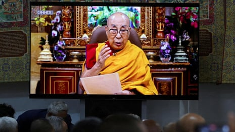
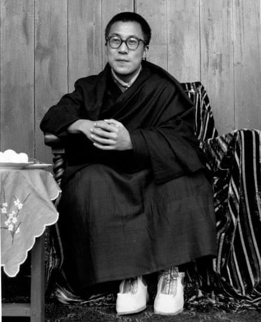
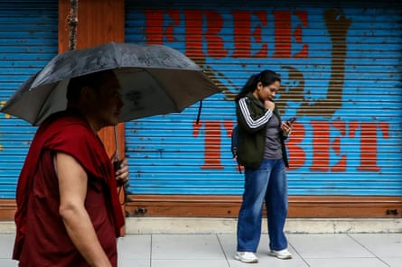
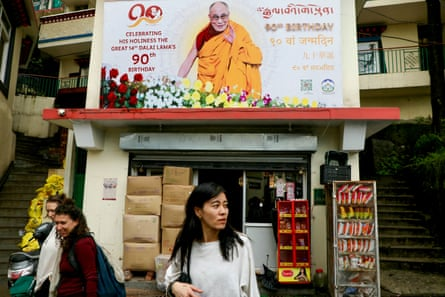

F ew celebrations have the hills of Dharamshala abuzz like the birthday of the Dalai Lama . But this year, as monks and devotees flooded into the mountainous Indian city before the Tibetan spiritual leader turns 90 on Sunday, the mood of anticipation has been palpable.
For years, the Dalai Lama had promised that around his 90th birthday he would make a long-awaited announcement about his reincarnation. Finally, in a video broadcast to Tibetan monks and leaders on Wednesday, he laid out what the future would hold. It came amid fears of a ruthless succession battle between the Tibetan community and the Chinese government, which for decades has sought to control the institution of the Dalai Lama, revered as the highest teacher in Tibetan Buddhism.
Dalai Lama outlines process for choosing his successor after he dies – video
Tenzin Gyatso, the 14th Dalai Lama, confirmed he would remain in the role until he died. Then, as per centuries of tradition, he would be reincarnated, and only his inner circle – a trust of closely allied monks – would have the “sole authority” to locate his successor; an often lengthy process to track down a child in which his spirit has been reborn.
“No one else has any such authority to interfere in this matter,” the Dalai Lama told his monks.
The announcement ended years of speculation that, in an attempt to prevent Chinese interference, the Dalai Lama might put forward an alternative mode of reincarnation, such as transferring his spiritual essence to a successor who could be found while he was still alive. To the great worry of many in the Tibetan diaspora, he had even hinted that he may not reincarnate at all.
The Dalai Lama’s latest statement was a clear defiance of the Communist party in China , which has long held the view that only it has the authority to decide the next Dalai Lama and has even enshrined the right into Chinese law.
However, Tansen Sen, a scholar of Indo-Chinese relations and Buddhism , noted that the Dalai Lama’s message struck a more diplomatic tone than some of his previous statements. In earlier writings, he had said the 15th Dalai Lama would be born in the “free world” – taken to mean outside China – but this time he did not repeat that.
“I see this as a very strategically handled announcement which avoided ruffling China’s feathers too much,” said Sen. “The Dalai Lama is not only a religious leader, he is also a shrewd thinker and I think he realises that there are larger issues at play, particularly that he is caught geopolitically between India and China.”
However, China’s sensitivity over the issue was evident in the absence of the Dalai Lama’s statement from all Chinese or Tibetan media. “China’s propaganda managers seem very reticent for this news to reach Tibetans or even Chinese,” said Robert Barnett, a scholar of Tibetan history at Soas University of London. “Presumably that’s because Chinese leaders fear a popular outpouring of support for the Dalai Lama, or they are struggling to agree on how to respond.”
China invaded and took control of the autonomous region of Tibet in 1950. After a failed uprising by Tibetans in 1959, China threatened to arrest the Dalai Lama – who acted as a religious and political leader – forcing him into exile in India.
The Dalai Lama in 1959.Photograph: Keystone Features/Getty Images
After his perilous escape across the Himalayas, in April 1959 the Dalai Lama met the then-Indian prime minister, Jawaharlal Nehru, who declared – against much opposition within his own government – that the Tibetan spiritual leader “should be allowed to live in peace” in India.
Since then, the Dalai Lama, along with other Tibetan religious leaders, civilians and parliamentarians in exile, have established their political and religious headquarters in Dharamshala, high in the Himalayan mountains.
From his outpost, the Dalai Lama has been both a religious leader and a tireless and highly effective global advocate for the Tibetan cause and community over the past 66 years. He has vocally resisted calls by China for it to have any say over the institution of the Dalai Lama or to meddle in the succession process.
Within greater Tibet, home to 6 million people, Chinese authorities have imposed increasingly draconian measures and censorship to try to crush the influence of the Dalai Lama, including banning images of him.
Beijing has described the Dalai Lama as a “wolf in monk’s clothing” and views him as a dissident and separatist, even as he advocated for greater Tibetan autonomy within China, rather than full independence.
Chinese efforts are widely seen to have failed, and as the Dalai Lama’s international profile has grown – he has a Nobel peace prize and millions of devotees, including some of the world’s biggest celebrities – he remains more revered than ever.
His presence as a constant thorn in the side of Chinese efforts to impose complete homogeneity over Tibet means officials have become increasingly determined to control what happens when he dies. In a statement after the Dalai Lama’s announcement this week – which was only published in English – the Chinese foreign ministry spokesperson, Mao Ning, said his successor “must be chosen by drawing lots from a golden urn and approved by the central government”.
The Dalai Lama remains more revered than ever, in Dharamshala (above), Tibet and around the world.Photograph: Niharika Kulkarni/AFP/Getty Images
Analysts have widely agreed the most likely scenario after the death of the Dalai Lama is that two successors will be appointed; one located by Tibetan monks, as per tradition, probably outside China and recognised by the Tibetan community in exile, and another selected by the Chinese Communist party from within China.
Over the decades, the Dalai Lama’s presence in Dharamshala and the free movement he is afforded by India has remained a source of tension in Indo-Chinese relations. Yet since 2020, when border tensions erupted into violent skirmishes, it appeared the Indian government, led by the prime minister, Narendra Modi, began to see the Tibet issue as a direct form of leverage over China. China has emphasised that any country that interferes in the Dalai Lama reincarnation will be sanctioned – a message seen to be directed at India.
In a notable break from convention, this week India’s minister of minority affairs, Kiren Rijiju, himself a Buddhist, said publicly that reincarnation of the Dalai Lama “is to be decided by the established convention and as per the wish of the Dalai Lama himself. Nobody else has the right to decide it except him.”
China’s foreign ministry instantly called on India to “stop using Tibet issues to interfere in China’s domestic affairs”.
Dharamshala is preparting for the Dalai Lama’s 90th birthday celebrations.Photograph: Niharika Kulkarni/AFP/Getty Images
Amitabh Mathur, a former adviser on Tibet to the Indian government, said it was highly likely that the Dalai Lama’s office would have informed New Delhi of the reincarnation announcement, and that Rijiju’s statement would not have been made without consulting senior ministries. “It certainly goes above and beyond what has been said by India before,” said Mathur.
He suggested the geopolitical challenges over the Dalai Lama were likely to become more complicated after his death, particularly if the Tibetan officials located his reincarnation inside India, in defiance of China’s own possible selection.
Tibetan officials have confirmed that unofficial back channels remained open with the Chinese and that the Dalai Lama was doing all he could to prevent the 600-year-old Tibetan Buddhist institution being hijacked by Chinese political interests. “He’s viewing these things from a very practical lens,” said Mathur. “Don’t forget, the Dalai Lama is as well versed in statecraft as he is in spiritual matters.”
Nonetheless, as he led prayers on the eve of his birthday, the Tibetan leader – who appeared in good health – emphasised that he did not foresee his death coming any time soon. “I hope,” he said, “to live another 30 or 40 years.”